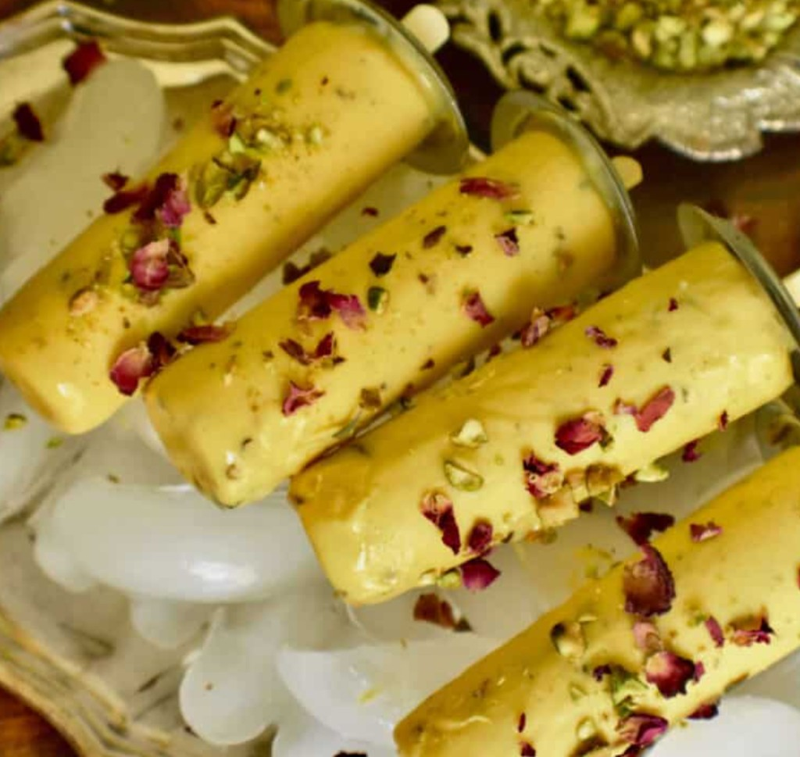

About Mary
From the streets of Islamabad to the heart of Orange County — one woman's quest for the perfect kulfi.
A Taste of Home
Mary grew up in Islamabad, where kulfi wasn't just a dessert — it was a celebration. Summer evenings meant chasing the kulfi wallah down the street, unwrapping that creamy stick, and savoring every slow melt.
Those flavors stayed with her long after she moved to America. But no matter where she looked, she couldn't find kulfi that tasted like home.

Years of Experimentation
Mary spent years in her kitchen, testing recipes late into the night. She sourced premium, high-quality ingredients — real saffron, hand-selected pistachios, fresh mangoes, and rich full-cream milk.
She refused to cut corners. No artificial flavors. No shortcuts. Just patience, tradition, and a whole lot of love.
When she finally shared her kulfi with friends, the response was overwhelming. "You have to sell these," they said. "This is the real thing."
Kulfi Kueen Is Born
That passion became Kulfi Kueen — a small-batch artisan kulfi business rooted in Pakistani heritage and crafted for the modern palate.
From classic Malai and Pistachio to bold creations like Dubai Chocolate and Biscoff, every flavor tells a story. Mary makes each batch by hand in Orange County, California, with the same care she'd put into feeding her own family.
"Kulfi nahi, feel hai yaar!" — It's not just kulfi, it's a feeling.
Explore Our Flavors